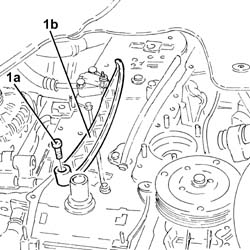
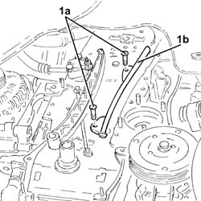

1032C40 Timing CHAIN TENSIONER PLATE - R.R.
- Path
- Procedures > 10 ENGINE UNIT > 1032 TIMING SYSTEM > 1032C timing system tensioners > 1032C40 Timing CHAIN TENSIONER PLATE - R.R.
- Kind
- repair procedure (removal / refitting; the operation number is the code)
- Applies to
- engines: 1.3 JTD 16v; all production periods
- Interactive page
- https://sloeber94.github.io/elrnDB-fPnd/en/#/2752574
Applies to: engines: 1.3 JTD 16v; all production periods
 Removing
Removing
 Refitting
RefittingRemove the car from the ramps.
Disconnect the battery negative terminal.
0010T84 coolant for air conditioning system dehydrate and recharge
1088B10 engine cooling tank - r + r
1008B10 power unit front mount (timing side) flexible block - replace
1008A47 rigid power-unit mount - timing side - r r for versions with air conditioner
1092G11 Engine components single drive BELT - R.R. for versions with air conditioning
1092A12 crankshaft pulley - r+r for versions with air conditioner
2110A60 manual gearbox/engine coupling bracket - r+r
1020A20 CRANK CASE OIL SUMP - R + R CLEAN SEALS FOR SEALANT APPLICATION
1020B12 CHAIN-DRIVE VALVE GEAR COVER - R.R. AND GASKET REPLACEMENT FOR MODELS WITH AIR-CONDITIONER
1032A12 CHAIN AND GEARS for timing system - R.R. for timing or Replacement.
PROCEED AS FOLLOWS FOR THE MOBILE PAD
1. Withdraw pin (1a)a nd remove the mobile pad of timing chain (1b).

Applies to: engines: 1.3 JTD 16v; all production periods
PROCEED AS FOLLOWS FOR THE FIXED PAD
1. Undo the bolts (1a) and remove the timing belt fixed pad (1b).

Applies to: engines: 1.3 JTD 16v; all production periods
Refitting
RemovingPROCEED AS FOLLOWS FOR THE FIXED PAD
Refit the fixed timing belt pad in its seat and secure with bolts.
PROCEED AS FOLLOWS FOR THE MOBILE PAD
Refit the mobile timing belt pad in its seat and secure with bolts.
1032A12 CHAIN AND GEARS for timing system - R.R. for timing or Replacement.
1020B12 CHAIN-DRIVE VALVE GEAR COVER - R.R. AND GASKET REPLACEMENT FOR MODELS WITH AIR-CONDITIONER
1020A20 CRANK CASE OIL SUMP - R + R CLEAN SEALS FOR SEALANT APPLICATION
2110A60 manual gearbox/engine coupling bracket - r+r
1092A12 crankshaft pulley - r+r for versions with air conditioner
1092G11 Engine components single drive BELT - R.R. for versions with air conditioning
1008A47 rigid power-unit mount - timing side - r r for versions with air conditioner
1008B10 power unit front mount (timing side) flexible block - replace
1088B10 engine cooling tank - r + r
0010T11 engine oil check level and top up
0010T84 coolant for air conditioning system dehydrate and recharge
Connect the battery negative terminal.
Remove the car from the ramps.
Topics linked from this page (13)
- 0010T11 engine oil check level and top up
- 0010T20 coolant change
- 0010T84 coolant for air conditioning system dehydrate and recharge
- 1008A47 rigid power-unit mount - timing side - r r for versions with air conditioner
- 1008B10 power unit front mount (timing side) flexible block - replace
- 1020A20 CRANK CASE OIL SUMP - R + R CLEAN SEALS FOR SEALANT APPLICATION
- 1020B12 CHAIN-DRIVE VALVE GEAR COVER - R.R. AND GASKET REPLACEMENT FOR MODELS WITH AIR-CONDITIONER
- 1032A12 CHAIN AND GEARS for timing system - R.R. for timing or Replacement.
- 1088B10 engine cooling tank - r + r
- 1092A12 crankshaft pulley - r+r for versions with air conditioner
- 1092G11 Engine components single drive BELT - R.R. for versions with air conditioning
- 2110A60 manual gearbox/engine coupling bracket - r+r
- 4450B04 right front wheel r r